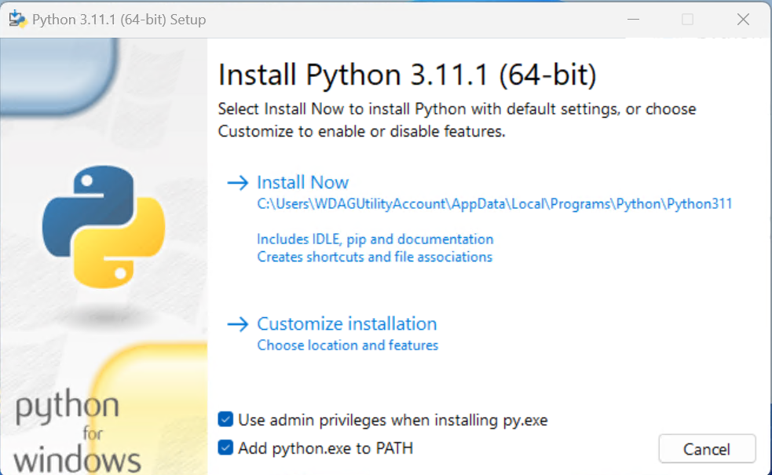

Last Updated: 2023-02-03
In this codelab, you'll install python with a virtual environment and implement some functions to get familiar with python's data structures and syntaxe.
From the official website:
Install it and check Add python.exe to PATH

In a new terminal session do:
$ python --version Python 3.x.y
Adapted from: https://www.dataquest.io/blog/a-complete-guide-to-python-virtual-environments/
First make a project folder, and create a virtual environment inside it. To do so, open the terminal app, write the following command, and hit return.
$ mkdir myproject
Now, use the venv command to create a virtual environment inside the project folder, as follows:
$ python -m venv myproject/env
Check all the files created in the new folder myproject/env
To activate the virtual environment, we created in the previous step, run the following command.
$ myproject\env\Scripts\Activate.ps1 -Prompt "MyCustomEnvName" (MyCustomEnvName) PS C:\...\myproject>
Adapted from: https://www.dataquest.io/blog/a-complete-guide-to-python-virtual-environments/
We are now inside an isolated virtual environment where only pip and setup tools are installed by default. Let's check the pre-installed packages on the virtual environment by running the pip list command.
(MyCustomEnvName) PS C:\tmp> pip list Package Version ---------- ------- pip 22.3.1 setuptools 65.5.0
Before we want to use pip to install any packages, let's upgrade it to the latest version. Since we're working inside the virtual environment, the following command only upgrades the pip tool inside this environment, not in the other virtual environments or system-wide.
(MyCustomEnvName) PS C:\tmp> python -m pip install --upgrade pip
Let's rerun the pip list command to see the changes
Now, let's install the pandas package into the environments. Before installing the package, you need to decide which version to install. If you're going to install the latest version, you can simply use the following command:
(MyCustomEnvName) PS C:\tmp> python -m pip install pandas
But if you want to install a specific version of the package, you need to use this command:
(MyCustomEnvName) PS C:\tmp> python -m pip install pandas==1.1.1
Now, let's see how we can tell pip that we are going to install any version of pandas before version 1.2.
(MyCustomEnvName) PS C:\tmp> python -m pip install 'pandas<1.2'
Also, we can ask pip to install the pandas package after version 0.25.3 as follows:
(MyCustomEnvName) PS C:\tmp> python -m pip install 'pandas>0.25.3'
Let's review the list of installed packages in the environment.
(MyCustomEnvName) PS > pip list Package Version --------------- -------- numpy 1.24.1 pandas 1.5.3 pip 23.0 python-dateutil 2.8.2 pytz 2022.7.1 setuptools 65.5.0 six 1.16.0
While installing pandas, NumPy and three other packages are automatically installed as prerequisites for the pandas package.
Adapted from: https://www.dataquest.io/blog/a-complete-guide-to-python-virtual-environments/
It's common to reproduce a virtual environment. Assume your colleague is going to work on the same project that you have been working on for weeks. She needs to install exactly the same packages with the correct versions in a virtual environment on her system. To create identical environments, you first need to list all the dependencies installed in the project's virtual environment by using the pip freeze command.
(MyCustomEnvName) PS C:\tmp> pip list numpy==1.24.1 pandas==1.5.3 python-dateutil==2.8.2 pytz==2022.7.1 six==1.16.0
The output of pip freeze is quite similar to pip list, but it returns the list of packages installed on an environment in a correct format to reproduce the environment with the exact package versions the project requires. The next step is exporting the package list into the requirements.txt file. To do so, run this command:
(MyCustomEnvName) PS C:\tmp> pip freeze > requirements.txt
The command above creates a text file named requirements.txt in the current folder. The requirements.txt file contains all the packages and their exact versions.
Start by
Next steps:
git clone the newly created repository..gitignore)requirements.txt file.